RocketAgent: A Long-Horizon Engineering Agent for Multidisciplinary Design of Liquid-Rocket Thrust Chambers
RocketAgent：面向液体火箭推力室多学科设计的长时程工程 Agent
简介
论文针对液体火箭推力室多学科初步设计中的跨工具依赖难题：下游约束可能迫使回溯修改早期决策，设计变更后过期结果易被静默复用。方法上由单一 plan-owning Coding Agent 以 Think-Act-Observe-Improve 循环协调性能计算、冷却/喷注器优化、几何生成与多物理验证等契约化技能，用 provenance-aware 知识图谱支持方法选择，用类型化 Design Intermediate Representation 维护共享参数、产物与决策，并以 revision-aware 失效机制与 solver 入口检查阻断过期输入，重大变更须经工程师授权。在 500 N LOX/RP-1 代表案例中，冷却搜索从最大比冲点的 0/74 可行经授权修订至 r=1.09 后达到 8/70，并完成几何生成、多物理验证与构型选型；受控重放验证了依赖失效（24 个产物/11 个阶段）与过期 STL 阻断。对团队而言，这是'单 Agent + 契约化技能 + 共享状态 + 人在回路治理 + 受控评测'的完整工程落地范例。
问题
液体火箭推力室初步设计涉及多学科相互依赖的分析，下游约束可能要求回溯修改早期决策；核心问题是如何让 Agent 的规划与不断演进的设计依据（需求、参数、产物、决策）保持一致，在长时程、跨异构工具的工作流中正确识别设计变更后受影响的结果、阻断过期输入的复用，并区分输入错误、数值失败与物理不可行等不同失败类型以决定继续方式。
方法
单一 plan-owning Coding Agent（Think-Act-Observe-Improve 循环）持有全局计划，通过 capability-skill-adapter 三层分离将规划连接到执行：能力标识工程任务、技能定义流程与检查、适配器将已接受状态转换为后端输入。provenance-aware KG 提供先例设计、方法卡与冲突知识的检索；类型化 Design IR 作为活跃 digital thread，记录需求、参数、产物、证据、决策及其单位/溯源/依赖/修订关系。已接受的变更触发依赖范围的自动失效并生成有序重执行计划，solver-entry 检查比对产物注册表以阻断 superseded 文件；确定性程序执行数值计算与工程门槛，人在回路授权重大变更。后端包括 RocketCEA/RPA（性能与轮廓）、GA（冷却通道搜索）、GPR+NSGA-II（喷注器筛选）、PicoGK（几何）、DeepFlame/Fluent/Abaqus（验证）。
关键结果
代表性 500 N LOX/RP-1 案例：最大比冲工作点 74 次冷却候选评估 0 个硬可行；经授权修订至 r_Ox/Fuel=1.09 后 70 次评估中 8 个硬可行
喷注器 GPR 代理模型 held-out（n=118）：喷雾角 R²=0.926、MAE=3.746°、RMSE=4.881°、NRMSE=4.314%；Fuel 侧压降 NRMSE=3.247%，Ox 侧 NRMSE=4.106%
7 次 NSGA-II 搜索共 113,120 次代理评估，产生 1,079 个可行 first-front 候选与 140 个导出代表；140 个独立 post-selection VOF 验证中 surrogate-to-VOF 喷雾角 MAE/RMSE=5.895°/7.476°
Fluent 燃烧积分响应全部满足 |δ|<10% 门槛，最大偏差 7.91%；顶板路径应力裕度 1.38（门槛 1.2）
四元素布局 Ox 流量 CV=1.92% 优于五元素 5.08%，据此选定四元素构型
受控修订测试：上游混合比变更使全配置失效 24 个产物/11 个阶段并新增 7 个重执行阶段，关闭检查的对照配置均未检出；superseded STL 在 Abaqus 入口被拒绝（exit code 3，对照配置为 0）
喷管构型复用：TOC/15°锥/30°-10°钟形三种轮廓最大径向重建误差 ≤0.1 mm，15 项生成器回归测试通过
创新点
据作者所述，这是首个面向液体火箭推力室这类复杂工业产品初步设计的知识约束型单协调者、多技能架构。相比已有 task-bounded 工程闭环（如结构设计 Agent、DesignGPT/iDesignGPT），核心新意在于将 revision-aware 依赖失效、solver-entry 准入检查与共享 Design IR 集成进主状态更新路径，使 Agent 能跨阶段携带工作并在设计变更后继续执行；并以预注册期望集、双配置对照的受控重放实验单独验证修订治理机制，而非仅依赖历史执行记录。
团队参考意义
相关度级别：high
命中能力域：3.1 上下文工程与记忆 | 3.3 Agent 架构与工具使用 | 3.5 评测与可靠使用
理由：直接命中 3.3：论文核心是 Agent loop（Think-Act-Observe-Improve）、capability-skill-adapter 契约化技能/工具调用、以及单 Agent 长时程执行的可靠性设计（确定性门槛、失败分类路由）。直接命中 3.5：用预注册期望集+双配置对照的重放实验评测修订治理机制，人在回路授权构成人机协作工作流，整体是 AI 辅助工程的实证研究。同时命中 3.1：Design IR 作为跨阶段持久共享状态、KG 溯源检索、以及持久会话中的上下文压缩事件，对应结构化上下文组织与 Agent 记忆管理。虽然应用领域是火箭设计，但'契约化技能+共享状态+修订失效+人在回路'的架构模式与评测方法对团队构建工程自动化 Agent 直接可迁移。
建议动作：深入精读并做内部分享
中文全文
arXiv:2610.06044v1 [cs.AI] 2026年10月5日
RocketAgent: A Long-Horizon Engineering Agent for Multidisciplinary Design of Liquid-Rocket Thrust Chambers
RocketAgent：面向液体火箭推力室多学科设计的长时程工程智能体
Junxiang He a,b，Runze Mao a,c,d,∗，Kun He c，Teng Zhang c，Liming Zheng c，Ke Xiao c，Zhi X. Chen a,c,d,∗
a 北京大学湍流与复杂系统国家重点实验室，力学与工程科学学院，北京，100871，中国
b 北京大学工学院，北京，100871，中国
c Legendspace Intelligence Technology Co., Ltd.，北京，100080，中国
d 科学智能研究院（AI for Science Institute, AISI），北京，100084，中国
Abstract
液体火箭推力室设计涉及相互依赖的多项分析，下游约束可能要求重新审视先前的设计决策。跨异构工具管理这些依赖关系，需要在整个工作流程中保持设计信息的一致性并进行协调的更新。我们提出 RocketAgent——一个面向液体火箭推力室多学科初步设计的长时程工程智能体（long-horizon engineering agent）。由单一持有计划的 Coding Agent 协调用于性能尺寸计算、子系统优化、几何生成与多物理场评估的工程技能。具备溯源感知能力的知识图谱支持方法选择，而带类型的设计中间表示（Design Intermediate Representation）则维护共享参数、工件与决策。具备修订感知能力的检查会使受影响的结果失效，并阻断已被取代的输入，由此引发的变更须经工程审批。在一个代表性的基于仿真的设计中，RocketAgent 从一次不可行的冷却搜索出发，经由工程师授权的工作点修订继续推进，确定了可行的子系统设计，并协调后续的几何生成与多物理场评估，以支持最终构型选择。独立的模块测试评估了代理模型预测与喷管适配。在三个受控场景下开展的双构型对比验证了求解器执行之前预期的依赖失效与已被取代输入的阻断。代表性案例展示了贯穿多学科设计工作流程的持续协调，而受控测试则确立了支持该执行的修订机制的行为。
关键词：长时程工程智能体；知识图谱；多学科设计；工作流编排；设计修订管理；液体火箭推力室
∗ 通讯作者。
电子邮件地址：maorz1998@pku.edu.cn (R. Mao)，chenzhi@pku.edu.cn (Z. X. Chen)。
1. Introduction
复杂工程产品的设计涉及跨学科与跨计算工具的相互依赖的决策。随着设计的推进，需求、模型假设与分析结果必须保持一致，而后期的发现可能要求对早期决策进行修订 [1, 2]。管理这些依赖关系需要工程师确定哪些任务可以继续进行、哪些结果仍然适用，以及哪些分析在变更之后必须重新执行。支持这种协调是一个工程信息学问题，它将设计知识的表示与其在不断演进的工作流中的使用联系起来。
液体火箭推力室设计为研究这一问题提供了具体场景。推进性能、再生冷却、喷注器设计与结构响应会对同一设计施加相互耦合的要求 [3-5]。为实现高比冲而选取的工作点可能被证明与冷却约束不相容，从而引发一次修订，该修订会改变推进剂流量、子系统设计以及后续分析的输入。这些变更必须通过专用的计算、几何与仿真工具一致地传递下去。因此，完成初步设计需要在相继的工程决策之间进行协调，其中包括将工作重新引向较早阶段的反馈 [1, 3]。
已有的工程方法为管理这一过程提供了基础。基于知识的工程（KBE）与知识图谱（KGs）将可复用知识及其关系形式化，支持方法选择与设计决策 [6, 7]。数字主线连接跨阶段的设计信息 [2]，而多学科设计优化则围绕显式的变量、目标与约束来组织耦合分析 [8]。这些方法处理的是知识表示、信息连续性与计算设计中相互补充的方面。要将它们集成到一个可执行的工作流中，就需要所表示的知识与依赖关系能够决定执行哪些工作，以及其结果如何影响后续决策。
基于大语言模型（LLM）的 Agent 通过知识检索、规划与工具调用为这种协调提供了一种途径 [9-11]。工程应用已将 Agent 决策与确定性计算相连接，用于符合规范的结构设计、有限元优化以及可追溯的分析工作流 [12-14]。此类系统为利用计算反馈来指导后续行动提供了先例。然而，LLM 的输出可能包含缺乏依据的内容 [15]，这使得工程知识、显式接口与数值校核对其应用而言不可或缺。对于一个扩展的多学科工作流而言，这些控制必须跨越任务边界发挥作用：一个在局部有效的计算仍可能使用过时的工作点、依赖于尚未被接受的子系统设计，或者产生在修订之后不再适用的结果。
本文所解决的问题是如何将智能体规划与设计不断演进的工程基础相连接。智能体需要能够访问适用的方法、已接受的输入、未解决的约束以及计算结果之间的依赖关系。当评估失败时，工作流必须将输入错误或数值失效与物理不可行性区分开来，并确定合适的继续方式。当一项变更被接受时，必须在受影响的结果被复用之前将其识别出来。这些需求促使在执行过程中集成可复用的工程知识、持久化的设计状态以及修订处理。
我们提出了 RocketAgent，一个面向液体火箭推力室多学科初步设计的长时程工程智能体。这里，长时程执行指在一段由相互依赖的工程任务构成的延长序列中持续推进，包括反馈驱动的修订和专家决策点。单个 Coding Agent 维护全局计划，并通过声明的输入、输出和验证要求来协调各项工程技能。具有溯源感知能力的知识图谱（KG）支持方法选择，而类型化的设计中间表示（Design Intermediate Representation，Design IR）则将需求、参数、产物、证据和决策关联起来。被接受的变更会触发依赖范围的失效处理和有序的重新执行计划；求解器入口检查会阻断已被取代的输入。确定性工具执行计算并强制执行数值判据，而工程师则授权具有重大影响的变更并审查最终设计。
本研究贡献了一种将这些机制连接起来的架构，并在互补的层次上评估其运行情况。一个具有代表性的基于仿真的案例追踪了工作流从被接受的需求开始，依次经历冷却驱动的重新设计、子系统开发、几何生成和多物理场评估的全过程。该记录记载了 Agent 如何跨阶段推进工作，并在工程反馈之后继续执行。单独的模块测试评估代理模型预测与几何接口复用。跨三个受控场景的双构型对比测试了依赖失效与已被取代输入的阻断，执行在求解器启动之前停止。这些评估共同在基于仿真的初步设计范围内，考察了持续的工作流执行以及支持该执行的具体修订机制。
第 2 节回顾相关工作，第 3 节介绍该框架，第 4 节报告工程结果与受控测试结果。第 5 节和第 6 节讨论其意义并总结各项贡献。
2.1. Knowledge-Based, Knowledge-Graph, and Model-Based Engineering Design
基于知识的工程（KBE）将产品与过程知识形式化，以自动化重复出现的工程任务。Verhagen 等人 [6] 整合了其理论基础，并指出了在可追溯性、互操作性和实施方面的挑战。Al-Ashaab 等人 [16] 通过 KBE-ProVal 将汽车设计变更与验证计划关联起来，在产品生命周期管理环境中将物理试验、理论知识和历史结果联系起来。这些方法将知识复用与变更追溯确立为实用的设计能力。
知识图谱（KG）将这些能力扩展到决策支持与设计探索。Hao 等人 [7] 对决策知识进行结构化以支持检索与导航，利用自然语言处理将折衷决策支持问题（compromise Decision Support Problem）的表述转换为图表示。其评估涵盖了 25 个供应链决策问题。Liu 等人 [17] 使用图嵌入来预测智能产品中的功能耦合关系。Huang 等人 [18] 将多源 KG 与图匹配、多目标优化、决策以及基于机理的仿真相结合，用于运载火箭级间分离架构。其工作流程展示了结构化知识如何支持带有可追溯反馈与置信度标注的设计评估循环。
基于模型的系统工程与数字主线（digital thread）提供了互补的信息管理原则。Madni 与 Sievers [19] 描述了一个支持规格定义、设计、验证与配置管理的持续演化系统模型。Singh 与 Willcox [2] 通过分阶段更新将全生命周期信息关联起来，以支持不确定性下的迭代设计。这些基础共同促使人们将可复用的工程知识与特定设计的演化状态分离开来。RocketAgent 通过具有溯源感知能力的 KG 和共享的设计中间表示（Design IR）实现了这种分离，并将二者与可执行的工程技能连接起来。
2.2. LLM-Based Engineering Agents and Skill/Tool Use
基于大语言模型（LLM）的工作流将语言解释与知识检索及可执行动作连接起来。检索增强生成（RAG）使响应以外部文档为条件 [9]，而 ReAct 则将推理、动作与观察交替进行 [10]。工程应用将这些模式适配到产品开发中：DesignGPT 组织了与人类设计师基于角色的协作 [20]，自然语言计算机辅助设计（CAD）工作流将需求与计算及可编辑几何模型连接起来 [21]，而 iDesignGPT 则将 Agent 集群、设计方法与知识库相结合，用于概念开发与评估 [11]。该 CAD 研究展示了单级减速齿轮系统的参数一致生成。iDesignGPT 通过设计空间指标、在六个公开挑战上的专家评估以及受控用户研究，评估了其对概念设计的支持。
以物理为支撑的 Agent 将这种交互扩展到计算设计循环中。Chen 与 Bao [12] 使用专用 Agent 与确定性模块来实现符合规范的钢筋混凝土梁设计。其后续框架将 LLM 监督、遗传优化与针对超高性能混凝土梁的有限元评估相结合 [13]。StructureClaw 将受治理的技能、类型化工具、共享工件与本地分析后端连接起来，并在 150 个受控结构工程场景中评估执行轨迹 [14]。其基准测试（benchmark）涵盖标准工作流、交互鲁棒性与多模态结构模型重建。这些研究展示了针对有界工程任务的可执行反馈以及日益显式的工作流治理。它们还为将 Agent 规划与确定性计算相分离以及评估由此产生的执行记录确立了有益的先例。
对于推力室而言，编排范围涵盖热化学、冷却、几何、反应流与结构评估。RocketAgent 专注于通过单个拥有计划的 Coding Agent 与受契约约束的技能来驱动这一长任务序列。具备修订感知能力的 Design IR 在任务之间传递输入与工件，而与来源关联的执行和确定性检查则应对缺乏依据的 LLM 输出的风险 [15]。
2.3. Computational Methods for Thrust-Chamber Design
推力室分析将具有不同输入与假设的专用模型结合在一起。NASA CEA 计算化学平衡组分、热力学性质以及理论火箭性能 [22]；RocketCEA 通过 Python 提供这些计算的调用接口 [23]。RPA 支持液体火箭性能分析以及冷却推力室与喷管的热分析 [24, 25]。这些工具的输出为几何与冷却设计提供依据，前提是单位、平衡假设和喷管约定保持一致。
成熟的几何与设计方法包括 Rao 最优推力喷管型面 [26]、Rezende 等人的参数化推力室模型 [27]、液体推进剂发动机设计流程 [3] 以及流体冷却推力室准则 [28]。PicoGK 为计算几何提供可编程的体素、网格与点阵操作 [29]。耦合分析则解析此类几何内部的相互作用：Kim 等人 [5] 将可压缩反应流计算与再生冷却相耦合，并将性能预测与热试车测量结果进行对比；Liu 等人 [30] 则将温度场与压力场传递到燃烧室结构模型中。这些研究确立了跨工具设计工作流在再设计过程中必须保持的物理关联。
优化方法在由此形成的权衡空间中进行搜索。Martins 和 Lambe [8] 围绕统一的表述形式与流程组织了多学科设计优化（MDO）架构。NSGA-II 提供带精英策略的多目标搜索 [31]，而高效全局优化与基于代理模型的方法则减少了对昂贵函数评估的依赖 [32, 33]。这些方法假定变量、目标、约束和分析接口均已定义。在需求驱动的设计中，随着工况与几何的演化，这一表述形式必须保持一致。RocketAgent 使用遗传算法（GA）进行再生冷却通道搜索，并使用 NSGA-II 进行代理模型辅助的离心式喷注器筛选，每次搜索均与共享设计状态相连接。
更高保真度的方法提供流场证据与数值可信度流程。DeepFlame 通过 Cantera、PyTorch 以及其他计算工具扩展了 OpenFOAM 有限体积框架，用于反应流计算 [34]。针对 OpenFOAM 与 EBIdnsFoam 的评估考察了数值精度与并行性能 [35]。流体体积（VOF）方法用于解析自由边界动力学 [36]。离散化不确定性估计 [37]、验证与确认（V&V）原则 [38]、ASME V&V 20 [39] 以及 NASA-STD-7009B [40] 为计算证据的解读提供指导。这些方法为集成工作流提供了其赖以构建的数值能力与可信度实践。
2.4. Summary of Research Gap
现有研究提供了成熟的设计方法与任务有界的闭环，其中计算评估用于指导设计修订 [12-14, 18]。尚存的差距在于它们在液体火箭推力室这类复杂工业产品上的联合执行。其初步设计要求知识、可变参数、异构模型与修订反馈在从需求到经专家评审的设计包的全过程中保持关联。本文所综述的数字主线、以工件为中心的 Agent 以及模型可信度方法提供了互补的基础 [2, 14, 40]，但并未共同应对这一耦合的推力室工作流。
驱动这一扩展工作流需要三项支撑能力：状态连续性，将需求与参数关联至其来源与工件；证据闭环执行，将工具结果与设计检查及选择决策相连接；以及反馈与治理连续性，识别受影响的依赖关系并协调变更后的重新执行。这些能力使 Agent 能够跨越阶段边界推进工作，并在设计修订之后继续执行。例如，混合比的变更会影响热载荷、冷却可行性与下游几何，需要将计划与依赖结果一并更新。这些挑战促使采用一种 Agent 驱动的工作流，将多学科任务从需求贯通至设计评估，并以一致的信息传递与修订处理为支撑。
3. Proposed Methodology and System Realization
RocketAgent 通过三个相互衔接的阶段驱动推力室设计：将需求转化为设计概念、开发其相互耦合的各子系统，以及验证由此得到的构型。以下各节将阐述每个阶段的工程决策，以及在设计必须变更时支持工作延续的共享状态机制。
3.1. Problem Formulation
该问题涉及百牛级液体火箭推力室的稳态、由仿真支持的初步设计。在给定推力与工作要求的情况下，设计过程必须确定一致的性能状态、推力室/喷管型面、再生冷却布局以及初步的离心式喷注器构型，然后评估它们的集成多物理场响应。推进剂、壁面材料、喷管族与喷管角度以及各子系统构型均为可替换的输入，并由相应的后端模型提供支持。
设计空间将架构选择与连续的工作参数和几何参数相结合。硬约束强制保证几何一致性、热工水力极限、结构裕度与模型适用性；软目标则比较性能以及与起作用约束之间的距离。某些量仍留待优化，其最终取值即成为被采纳的设计决策。由于这些决策将相继的分析耦合在一起，完成任务需要在工程知识、数值工具与设计修订之间进行协调。
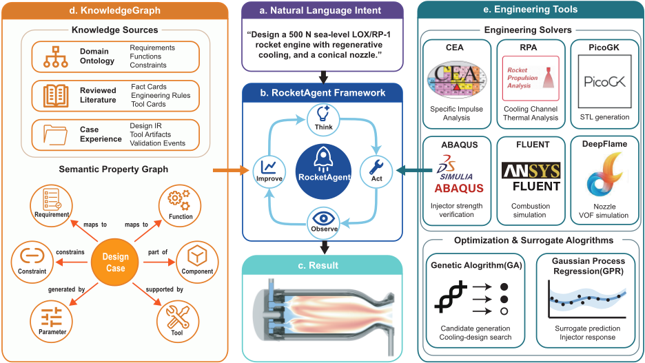
图 1 将这一协调问题转化为一种架构。其中心序列 (a)-(c) 通过一个拥有计划的 Coding Agent 将自然语言意图与初步设计输出连接起来。在 (b) 的循环中，Agent 解释当前任务、调用一项工程技能、检查返回的结果并更新计划。两条支撑分支为该循环提供不同的输入：(d) 中的知识图谱（KG）提供适用的知识与先前经验，而 (e) 中的计算、几何、仿真与优化工具则对不断演进的设计进行评估。因此，该架构将对下一任务的推理与该任务的执行联系起来。3.2 节将这一组件级视图发展为扩展的工程工作流。
3.2. Design-State Governance and Execution Architecture
图 2 将工作流组织为概念设计（Conceptual Design）、实体设计（Embodiment Design）与验证（Verification）三个阶段。拥有计划的 Coding Agent 贯穿全部三个阶段：它维护任务计划、选择符合条件的技能、检查这些技能的输出，并决定是向前推进还是回溯先前的工作。长时程执行意味着驱动这一从需求到被接受设计状态的扩展序列，包括在工程反馈之后的继续推进。
7
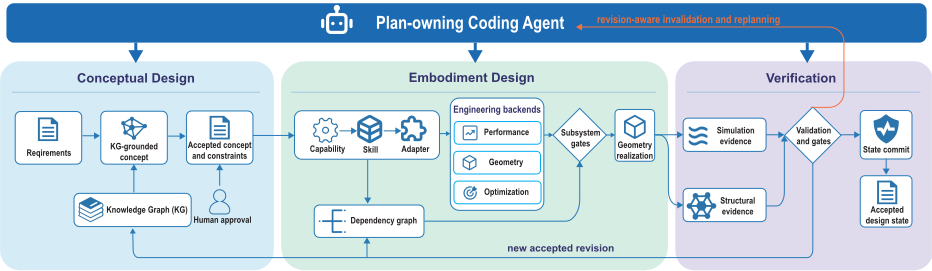
概念设计将需求与可复用的 KG 知识以及人工审批相结合，以确立被接受的概念与约束（3.3 节）。实体设计通过能力-技能-适配器（capability-skill-adapter）接口将这一基础转化为性能、几何与优化任务。依赖关系图识别这些任务的前置条件，子系统关卡则在几何实现之前检查所得设计（3.4 节）。
验证将仿真与结构证据呈交至验证关卡，随后将被接受的结果提交到设计状态（3.5 节）。橙色回环将反馈与具备修订感知能力的失效处理及 Agent 重新规划连接起来。当一项变更获得批准时，Agent 会重新处理受影响的任务，并将被接受的修订带入后续工作，这由下方的蓝色回环表示。知识复用仍须遵守 3.3 节中的溯源与评审要求。
这些跨阶段交接使用设计中间表示（Design IR）作为处于活动状态的初步设计数字主线 [2]。KG 提供可复用的方法与经验，而 Design IR 则通过单位、溯源、依赖关系与修订将当前的需求、参数、工件与决策关联起来。对于工作流步骤 k，状态及其经检查的更新为
其中 Q k 表示被接受的需求与假设，X k 表示带类型的参数，A k 表示工件引用，E k 表示证据，D k 表示所记录的决策。技能变换 T i 提出后继状态，而 C i 则在提交之前检查其输入、工程准则与所需审批。未通过的检查会保留先前状态并返回反馈。接受允许下游使用，可行性表示满足适用的硬约束，而选择则在可行的备选方案中进行挑选。
具备修订感知能力的自动失效机制被集成到主状态更新路径中。一项被接受的变更会识别直接消费者，沿下游依赖关系传播，将受影响的结果标记为过期，并生成有序的重新执行计划。未受影响的输出则保留其有效绑定。求解器入口检查还会将所提交的工件与活动注册表进行比较，即使被取代文件确实存在且校验和有效，也会将其阻止。针对仅结构材料字段的独立消费者允许进行局部修订，而不会使无关的冷却或几何结果失效。4.3.5 节对这些路径进行了评估。
能力（capability）—技能（skill）—适配器（adapter）的分离将规划与执行连接起来：能力识别工程任务，技能定义流程与检查，适配器将已接受的状态转换为后端输入。确定性程序计算响应并施加数值门槛；由外部协调的 Fluent 运行通过同一证据接口进入。人工审批管控具有重大影响的变更与最终选择。记录与接口细节保留在附录 D 中，Agent 的运行时与执行记录保留在附录 B 中。
3.3. KG-Grounded Conceptual Design
概念设计通过图 3 中的关系将初始请求转化为数值设计问题。区域 A 将一项需求沿其设计函数与工程约束追踪到工具输入；参数链接与 IR 路径链接标识出该输入在共享状态中的归属位置。区域 B 将这些需求与推力室组件、其子系统及其接口关联起来。这些路径共同将所请求的能力转化为实体设计（embodiment design）必须求解的对象、参数与约束。
该模式（schema）的下半部分说明了这一转换是如何得到支持的。区域 C 将设计记录、文献事实与经验关联到证据引用；区域 D 将设计方法与工作流阶段及冲突消解步骤关联起来。检索依据当前所处阶段与运行需求沿这些链接进行，返回兼容的既往设计、RPA 示例、方法卡片以及带有来源信息的经审核事实。这些历史记录可以在数值评估之前，为初始混合比范围、喷管与冷却备选方案、喷注器族以及冲突优先级提供初始依据。Agent 提出一种适用的方法，确定性检查则检验其单位、输入范围与前提条件。若缺失强制性信息，则会触发有针对性的澄清。检索权重与预算保留在附录 A 中。
冲突链接还解释了为什么一个在局部具有吸引力的选择可能需要在其他位置进行修订。例如，最大化比冲可能选出一个冷却无法承受的工作点，而增加通道数量则会改变水力权衡。已接受的目标、配置选择、假设与筛选规则用于初始化共享状态。后续的工具结果会细化该状态，并进入第 3.5.5 节的知识评审流程。
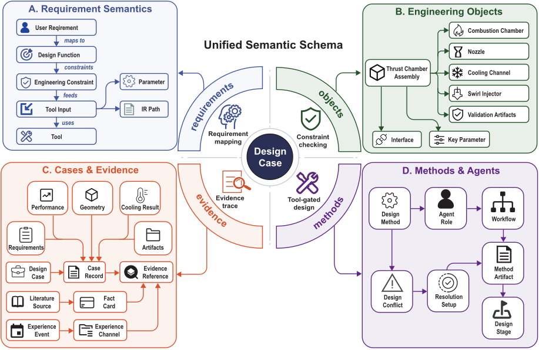
3.4. Skill-Coordinated Embodiment Design
图 4 将具体化设计组织为三个相互关联的任务族，并与推力室示意图中各自的物理区域相关联。左侧面板跟踪设计输入依次经过性能分析、几何生成与热评估的过程；其返回箭头表示当几何形状需要调整时进行细化。中间面板展示了遗传算法（GA）生成的冷却候选方案如何揭示壁温与压力损失之间的权衡。右侧面板将高斯过程回归（GPR）响应预测与 NSGA-II 搜索相结合，在固定推进剂流量下搜索喷注器备选方案。这三个任务共享同一工作状态，且必须先给出相容的型面、严格可行的冷却布局和容许的喷注器，然后才由 PicoGK 实现装配后的几何体。
3.4.1. Thrust-Chamber Performance and Contour Determination
所采纳的推进剂组合、燃烧室压力、环境条件和目标推力共同确定了性能计算。RocketCEA 在规定的混合比区间内评估平衡比冲，并确定最大性能工作点 [22, 23]。当喷管膨胀未作规定时，出口压力与环境压力相匹配。当存在可比的先前设计证据时，可采用一个可选的、有来源支持的上限来降低用于保守流量设计的比冲。原始计算结果与由此得到的设计值分别保留。
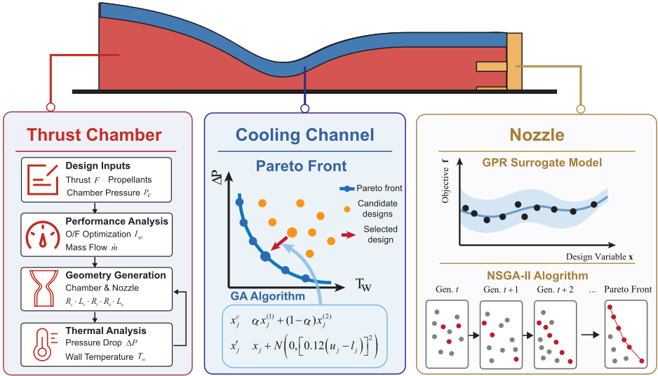
设计比冲 I sp 决定总推进剂流量，而氧燃比 r Ox / Fuel 决定其分配：
其中，F 为目标推力，g 0 为标准重力加速度，下标 Ox 和 Fuel 分别表示氧化剂和燃料。式 2 提供了冷却设计与喷注器设计所使用的物理流量预算。RPA 报告的流量提供了跨工具一致性校验。
RPA 依据该工作点、收缩比、特征长度以及所选喷管族对燃烧室和喷管进行尺寸设计 [24, 26, 27]。所支持的型面包括轴对称 TOC、锥形和抛物线钟形型面。由此得到的燃烧室、喉部和出口尺寸附带一个按轴向排序的型面，该型面由热分析与几何实现共享。在尺寸量化之后，将再次检查尺寸为正、轴向坐标递增以及几何锚点一致。若冷却无法容纳最大性能工作点，则采用由工程师授权的偏离峰值混合比，启动新一轮的性能、型面与热评估。因此，性能最优值始终受子系统可行性的约束。
3.4.2. Regenerative-Cooling Design under Coupled Constraints
冷却设计旨在寻求热学上有效、同时不带来过大压力损失或壁面强度不足的通道布局。有界搜索在通道数量、进口和出口的宽度与深度、热壁厚度、通道倾角以及冷却剂流量系数上进行变化。遗传算法通过选择、交叉和变异生成候选方案；几何检查在热评估之前剔除无法实现的通道布置。选择过程优先考虑可行性，其次考虑所配置的标量评分。独立的非支配后处理对四个归一化响应进行最小化：最大壁温、冷却剂出口温度、压力损失和结构风险。前三个响应按各自的限值进行归一化；结构风险为 SF req / SF min ，其中 SF req 为所需安全系数。
每个被接纳的候选方案均采用单一的全型面 RPA 通道壁模型进行评估，燃料从喷管出口流向燃烧室头部。RPA 提供逐站位的热流密度、壁面温度、冷却剂状态和压力损失。低阶结构筛查将压力载荷、穿壁热梯度与局部通道跨度弯曲相结合 [5, 28]。在轴向位置 x 处，其标量应力为
式中，σ vm , p 综合了经肋条-连接带修正的环向压力与闭端轴向压力，σ th = αE | T wi - T wc | / [2(1 - ν )] ，σ bend = | P cool - P g | w 2 ch / (2 t 2 w ) ，而 σ r 为可选的平均热约束项。其中，T wi 和 T wc 分别为热侧与冷却剂侧的壁面温度；P g 和 P cool 分别为燃气压力和冷却剂压力；w ch 和 t w 分别为通道跨度和热壁厚度；α、E 和 ν 则分别为热膨胀系数、杨氏模量和泊松比。最小筛查安全系数为
式中，Ω tc 包含采样的燃烧室/喷管壁面站位，σ allow 为所配置的许用应力。该筛查支持对燃烧室和喷管壁面强度的初步评估。代表性设计采用 CuCrZr，其通用材料定义与部件特定限值列于附录 A。
下游接纳要求通道壁热学求解结果有效，并同时满足壁温、冷却剂状态、压力损失、制造和安全系数限值。在适用的情况下，还包含针对特定燃料的冷却剂温度与结焦筛查。非支配排序揭示了各被评估候选方案之间的权衡关系，但只有通过完整硬约束集的候选方案才能被选中用于几何实现。仅凭良好的排序无法使不可行的设计获得晋级。搜索边界与数值设置保留在附录 D.2 中。
3.4.3. Fixed-Flow Surrogate-Assisted Injector Screening
喷注器设计在喷注面包络与点火器间隙要求的范围内，将已获接纳的 Ox 与 Fuel 流量分配到选定数量的同轴旋流单元之中。改变单元数量会改变单单元流量，因此每种布局都需要单独进行一次几何搜索。外部训练的高斯过程回归（GPR）模型使用十个几何或派生特征以及两个原始推进剂单单元流量特征。RocketAgent 在优化过程中保持这些流量特征固定，并且在设计执行期间不重新训练该模型。
用于模型开发的流体体积（VOF）计算在两条液体回路中均使用水。其入口流量与原始推进剂流量通过下式关联：
其中 N e 为单元数量，w 表示水。该映射遵循 ˙ m = C d A √ 2 ρ ∆ p，在几何不变且流量系数 C d 大致相等的情况下近似保持压降。训练特征保留原始推进剂流量，而训练响应对应于映射后的水工况。因此，RocketAgent 在推理时直接提供原始推进剂流量，而无需再次应用该转换。GPR 预测以水为基准的喷雾锥角、Fuel 侧与 Ox 侧压降及其标准差。
非支配排序遗传算法 II（NSGA-II）通过改变喷注器几何，最小化与规定喷雾角和压降目标之间的归一化偏差 [31]。接纳检查涵盖模型定义域、几何约束、所配置的平均喷雾角区间，以及两个以水为基准的平均压降，二者必须超过 0 . 20 P c 。µ - 2 σ 值作为诊断量予以保留，因为标称 GPR 区间不必经过校准 [41]。尺寸变量与角度变量在接纳之前被量化并重新求值。每个获批的布局随后进入其各自的几何实现与配置级验证。留出集预测误差与选定后独立开展的 VOF 对比在第 4.2 节中报告。
通用几何实现交接。三个设计族汇聚于一个共享的几何实现步骤。PicoGK 将已获接纳的燃烧室/喷管轮廓、硬可行的冷却布局以及可接纳的特定单元数量喷注器几何组合为实体与流体装配体 [29]。保留 RPA 的喷注面至出口坐标约定。每个布局生成其自身的 STL 装配体及关联的生成记录。坐标一致性与伪影检查确立了该交接，而拓扑与网格适用性则需要各自的验证记录。由此得到的面向特定分析的计算域支持下文所述的多物理场验证。附录 D.2 记录了数值设置与几何交接检查。
3.5. Verification-Driven Refinement
验证驱动的细化（verification-driven refinement）将四个问题区分开来：喷注器尺度的喷雾与水力响应、燃烧室尺度的反应流、热-结构强度，以及构型层面的流动验收。因此，软件栈按物理角色进行选择。DeepFlame 为喷注器提供瞬态的界面解析流体体积（VOF）证据；Fluent 提供三维反应流评估；Abaqus 提供有限元热-结构评估；而确定性的流动与状态检查则对由此得到的构型进行比较。这种分离使每个工具对其能够解析的物理量负责，并为 Agent 提供用于下游决策的类型化证据记录。各算例专用的网格、边界条件、材料卡、求解器控制参数和数值输出在附录 A、附录 C 以及第 4 节中给出。
3.5.1. Injector Spray and Hydraulic Response
选择 DeepFlame 用于喷注器尺度的证据，是因为其源自 OpenFOAM 的有限体积基础设施支持瞬态流体体积（VOF）界面输运，并能够解析液膜发展与一次破碎过程 [34, 36, 42, 43]。由此得到的相分数场和速度场补充了标量的喷雾角与压降响应，而求解器的通量则提供了直接的守恒性检查。湍流与压力-速度耦合通过声明的后端接口进行配置。
3.5.2. Chamber Combustion Performance
在几何实现之后，需要一个燃烧室尺度的反应流求解器，因为喷注器尺度的界面动力学并不能确定燃烧室与喷管中相互耦合的温度场和压力场。选用 Fluent 承担这一角色，因为它支持三维有限体积反应流计算、湍流与喷雾封闭模型、燃烧化学模型，以及基于已实现几何的场量或积分后处理。所得的温度、压力和积分响应为初步设计筛选提供燃烧侧证据。对于每个积分响应 y j，相对偏差定义为 δ j = ( y j - y ref j ) /y ref j，其中 y ref j 为对应的已接受设计参考值或 RocketCEA 参考值；燃烧关卡要求燃烧室压力、推力、比冲和特征速度满足 | δ j | < 10%。该阈值是用于初步构型筛选的工程一致性判据。其配置、化学与离散化细节保留在附录 C 中。
3.5.3. Coupled Thermal-Structural Strength
选择 Abaqus 作为结构分支，因为它能够在同一求解器环境中提供有限元热分析、压力载荷、支撑条件，以及将温度传递到力学分析步的功能。喷注器顶板被视为重点结构区域，因为它承受喷注器开口和点火器开口周围的耦合载荷；这使得所声明的应力路径比在所有受约束边缘上不加限定地取最大值更易于解释。该评估记录温度、位移、应力和反作用力证据，材料定义与准入判据保留在附录 A 中。
3.5.4. Oxidizer Distribution and Configuration Selection
构型选择除局部热、燃烧和结构检查外，还需要进行流动检查。流动台账首先检验积分出口流量是否与规定的入口流量一致；只有通过该检验后，才对布局内的分布进行排序。对于已解析的氧化剂供应，设 ˙ m Ox ,i 为单元 i 的积分出口流量，设 ˙ m Ox 为布局均值。变异系数与最大相对偏差为
这些度量用于量化已解析支路之间的分布情况。流动准入定义及各构型特定的数值保留在附录 A 和第 4.3 节中。
3.5.5. Feedback, Approval, and Design Continuation
一次失败的检查会向 Agent 返回被违反的准则、受影响的产物以及允许的变更范围。响应方式按失败类别选择：输入或绑定错误需要修正，数值失败需要对执行或离散化进行审查，而物理上不可行则需要重新设计。变更获得批准后，依赖范围限定的失效处理会将过时结果标记为失效，并安排受影响的分析重新执行；含义不明或超出范围的变更则退回给工程师。
同一个 Agent 还通过已声明的技能和工具适配器驱动仿真阶段：它选择符合条件的求解器任务，将已接受的设计中间表示（Design IR）绑定到求解器输入，启动或协调后端运行，检查返回的证据，并将工作流路由到下一个门控或修订环节。由 Agent 介导的计算流体力学（CFD）流程遵循我们团队此前 FlamePilot 工作中开发的方法，该方法使用基于大语言模型（LLM）的研究助手来配置、执行、后处理并迭代改进 DeepFlame/OpenFOAM 仿真 [44]。RocketAgent 直接采用这一流程，并将其在共享设计状态内扩展到喷注器、燃烧、热-结构和流动检查。需求、后果重大的模型或安全限值变更、高成本仿真投入以及最终选择均由人工审批决定。已验证、失败和未解决的结果作为相互独立的证据状态予以保留，而将结果提升为可复用的工程知识还需要溯源信息、适用性和专家评审。该治理层将求解器输出与设计延续衔接起来。执行轨迹与数值设置见附录 B 和附录 C；代表性结果与修订治理检查见第 4 节。
4. Performance Evaluation and Results
结果概览。RocketAgent 驱动了一条长时程工程链，从需求与基于知识的概念选择，一直到经 AI 辅助、多物理场评估的液体火箭推力室。从这个意义上说，该发动机并非仅仅由一个 AI 工具进行分析：一个 AI 编码智能体（AI Coding Agent）将已接受的设计状态贯穿于性能计算、冷却再设计、喷注器搜索、几何实现与独立验证之中，最终返回一个经选定的推力室构型。将第 3 节的工作流程应用于一个代表性的 500 N LOX/RP-1 任务，得到了图 5 所示的四要素设计。其结果是一个集成的工程制品：冷却可行的工况点、实体化的喷注器与喷管、可直接供求解器使用的固体与流体几何，以及独立的 VOF、反应流、热-结构与流动验收证据，均由同一个共享设计状态连接在一起。
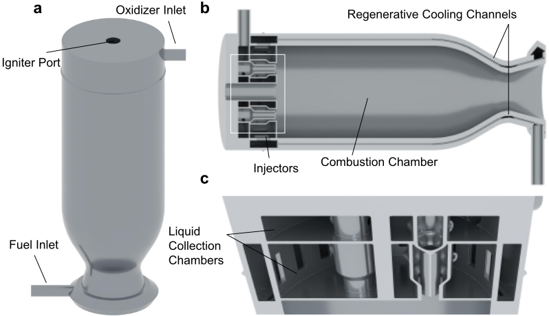
所交付的组件将外部接口与在整个工作流程中开发的内部几何连接起来。分图 (a) 标示了中央点火器孔口、头部端氧化剂（Ox）入口以及喷管端燃料（Fuel）入口。分图 (b) 的剖面图展示了喷注器头部、燃烧室/喷管型面以及再生冷却通道，而分图 (c) 的剖切视图则揭示了集液腔与内部喷注器通道。以下结果说明了这一集成设计是如何获得的，以及为何选择该设计。
4.1. Conceptual Design: Requirements and Design Basis
代表性任务要求推力室在海平面条件下、燃烧室压力 P c = 1.0 MPa 时提供 500 N 推力，采用液氧（LOX）/RP1 推进剂、15° 锥形喷管、再生冷却方式以及 CuCrZr 材料。这些被接受的输入将第 3.1 节中的问题表述实例化；混合比、冷却几何与喷注器几何仍属于设计决策。此时，知识图谱（KG）提供历史先验，指导初始的性能、冷却与喷注器选择，同时揭示已知的权衡关系。例如，在代价高昂的具体化搜索开始之前，先验经验即可标示出最大 I sp 工作点与冷却可行性之间的矛盾。因此，概念设计阶段确立了需求、基于 KG 的起始假设，以及用于具体化设计中耦合计算与子系统搜索的准入逻辑。
评估遵循第 3.4 节与第 3.5 节中的准入与选择逻辑。子系统候选方案必须先满足其完整的硬约束集合，然后才能进行基于偏好的选择。随后，已实现的布局必须通过构型级检查，之后才由氧化剂（Ox）侧流量均匀性确定优选布置。< 1% 的流量准入限值分别适用于 Ox、燃料（Fuel）与推进剂总流量，其入口归一化定义与成对定义保留在附录 A 中。这些限值并不限制单个支路的离散程度。
图 6 将代表性任务映射到下文所报告的物理设计对象与评估上。需求与以 KG 为依据的燃烧室概念引出燃烧室型面、冷却通道以及四元件与五元件喷注器备选方案。几何实现之后，该组件依次经过喷注器流体体积（VOF）评估、燃烧室燃烧评估以及耦合热-结构评估。证据列记录了相应的喷雾角/压降、推力/燃烧室压力以及应力/裕度检查，之后所选设计才被推进。这些卡片总结了主要的多物理场关卡；氧化剂侧流量准入与布局选择的对比在第 4.3 节中单独报告。由冷却驱动的工作点修订在第 4.2.1 节中详述，而任务计划、工具记录与独立验证群体则保留其各自的评估轨迹。
该设计依据为 RocketCEA/RPA 性能与型面计算以及耦合子系统搜索提供输入。由此得到的工作点修订与几何实现将在下文中作为一个相互衔接的具体化序列予以报告。
4.2. Embodiment Design: From Accepted State to Realized Hardware
概念状态现在进入具体化阶段。其首要问题是该性能点能否在热学与水力层面得以实现；只有在该问题得到回答之后，才允许进行喷注器尺寸设计与几何生成。因此，RocketAgent 将被接受的状态带入了一个耦合的冷却与喷注器设计。相同的 Ox 与 Fuel 总量被传递给两种喷注器布局，而最终确定的冷却布局则为几何实现提供了壁面与流动上下文。
![Figure 6: Representative engineering workflow for the 500 N LOX/RP-1 thrust chamber. Conceptual Design defines the requirements and KG-grounded concept. Embodiment Design realizes the chamber contour, cooling-channel layout, and four- and five-element injector alternatives. Geometry realization then feeds injector VOF, chamber-combustion, and coupled thermalstructural assessments. The evidence cards summarize spray angle/pressure drop, thrust/chamber pressure, and stress/margin checks; passing evidence advances to the selected design shown at right.](assets/a777/figures/fig_6.png)
18
4.2.1. Feasibility-Driven Operating-Point Revision
The first embodiment output was a cooling-feasible operating state. The question was whether the maximum-performance point could support a feasible cooling design. Following the KG-grounded requirement clarification in Section 3.3, the accepted concept supplied the propellants, operating conditions, nozzle family, and cooling requirement to RocketCEA and RPA. The Agent's recorded plan retained geometry generation as pending until the subsystem checks were resolved. Conditional human authorization allowed a richer mixture at fixed chamber pressure if cooling proved infeasible ( Appendix B).
At the maximumI sp operating point, none of 74 recorded cooling-candidate evaluations satisfied the complete thermal-hydraulic, manufacturing, and low-order structural criteria. This result activated the authorized return from cooling assessment to performance and contour determination. The Agent invoked the rich-side search and recalculated the dependent performance, flow, geometry, and cooling responses. At r Ox / Fuel = 1 . 09 , eight of 70 recorded candidate evaluations were hard-feasible.
The revised operating point established the common flow budget for the remainder of embodiment and verification. Eq. 2 gives ˙ m = 0 . 282944 kg/s, comprising 0.147564 kg/s Ox and 0.135380 kg/s Fuel. Thus, the mixture-ratio decision changed the inputs to cooling and injector design together, implementing the cross-stage dependency described in Section 3.2.
Fig. 7 shows the trade-off remaining after this operating-point revision. Lower maximum wall temperature generally comes at greater coolant pressure loss along the projected envelope. The hollow orange points lie within the two displayed limits but fail another hard constraint, so these axes alone cannot determine admission. Among the hard-feasible alternatives, the blue square marks the selected balanced design and the red triangle a temperature-priority alternative. The selected balanced design uses a pressure loss of 0.221 MPa, a maximum wall temperature of 725.3 K, and a minimum low-order safety factor of 1.81 under the common CuCrZr definition. This balanced point was preferred because it retains substantial thermal and structural margin without the large pressure-loss penalty of the temperature-priority alternative, and it fixed the cooling state inherited by the injector and geometry branches.
With the operating point and cooling state fixed, the remaining embodiment task is to generate injector alternatives and realize their common geometry interfaces.
4.2.2. Surrogate-Assisted Injector Embodiment
Fig. 8 summarizes the prediction evidence supporting the count-specific searches. The upper panels compare held-out point predictions with VOF responses; the lower panels examine post-selection residuals and an optimization trade-off. These evaluations define the injector embodiment search and its uncertainty context; the independent endpoint VOF verification of the realized configuration is reported in the verification subsection.
Injector-module validation used 549 training samples, 118 validation samples, and 118 non-overlapping held-out VOF samples, all based on water-substitute calculations. In Fig. 8(a), distance from the diagonal measures spray-angle prediction error; the complete held-out set achieved R 2 = 0 . 926 , MAE = 3 . 746 ◦ , RMSE = 4 . 881 ◦ , and NRMSE = 4 . 314% . Panel (b) compares the two pressure drops on logarithmic axes, accommodating their different response ranges. Fuel-side pressure drop achieved MAE = 42 . 043 kPa, RMSE = 89 . 123 kPa, and NRMSE = 3 . 247% ; Ox-side pressure drop achieved MAE = 10 . 133 kPa, RMSE = 16 . 234 kPa, and NRMSE = 4 . 106% . These statistics retain all 118 held-out samples and quantify the point-prediction evidence behind the upper panels.
19
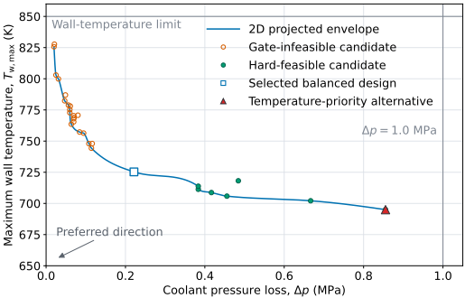
Seven target-conditioned NSGA-II searches used a population of 160 for 100 generations and recorded 16,160 surrogate evaluations per target, or 113,120 in total. They produced 1,079 feasible first-front candidates and 140 exported representatives. After the candidate list and search decisions were frozen, these 140 representatives were evaluated in separate VOF runs. The resulting labels were not used for GPR fitting, calibration, ranking, or selection; they therefore form an independent post-selection verification set for this search. The surrogate-to-VOF spray-angle MAE/RMSE was 5 . 895 ◦ / 7 . 476 ◦ , the Fuel-pressure-drop MAE/RMSE was 17.905/24.485 kPa, and the Ox-pressure-drop MAE/RMSE was 8.506/10.691 kPa.
The 140 labels are independent of model fitting and search decisions, but they are search-conditioned because the evaluated geometries were exported by the surrogate-assisted procedure rather than sampled randomly from the full design domain. Fig. 8(c) uses the predictions recorded before those VOF runs to separate target matching from uncertainty: its horizontal coordinate is prediction divided by target, whereas its vertical coordinate is the standardized VOF residual. A prediction near the target therefore need not have a small residual. For response j , z ij = ( y ij - µ ij ) /σ ij and empirical coverage is C j ( k ) = n - 1 ∑ i 1 ( | z ij | ≤ k ) , with n = 140 . Here, σ ij is the GPR predictive standard deviation, including its fitted noise-kernel contribution. Table 1 reports the resulting search-conditioned uncertainty statistics, and Fig. A.14 provides the calibration curves.
![Figure 8: Water-reference injector-module surrogate and search evidence. (a) Held-out VOF-surrogate parity for spray-cone angle ( n = 118 ). (b) Held-out parity for Fuel- and Ox-side pressure drops. (c) Standardized residuals z = ( y - µ ) /σ for 140 independent, search-conditioned post-selection VOF evaluations; dashed lines at z = ± 2 mark nominal two-standard-deviation limits, whose empirical coverage is reported in Table 1. (d) NSGA-II nondominated objective set, colored by the Ox-pressuredrop objective, with the selected module-validation knee point highlighted.](assets/a777/figures/fig_8.png)
| Response | C (1) (%) | C (2) (%) | Mean z | SD z | NLPD |
|---|---|---|---|---|---|
| Spray-cone angle | 50.71 | 80.71 | 0.750 | 1.175 | 3.565 |
| ∆ p w , Fuel | 92.86 | 100 | - 0 . 007 | 0.54 | 11.762 |
| ∆ p w , Ox | 64.29 | 93.57 | - 0 . 430 | 0.945 | 10.68 |
| Response | C (1) (%) | C (2) (%) | Mean z | SD z | NLPD |
(c) 面板中的喷雾角标记点超出标称 ± 2 σ 区间带的频率高于压降标记点，这与喷雾角区间 80.71% 的覆盖率及正残差偏置相一致。燃料压力区间偏于保守，而氧化剂压力区间则更接近标称覆盖率。这种依赖于响应量的校准特性解释了该流程为何在采用确定性均值准入规则的同时，还保留 µ - 2 σ 作为诊断手段。
21
图 8(d) 展示了模块验证候选方案是如何被选出的：坐标轴表示燃料压力与喷雾角的目标误差，颜色编码氧化剂压力目标，星形标记则标出了膝点（knee）折中方案。相对于 320 kPa、80° 和 120 kPa 的目标值，其独立 VOF 评估给出的结果分别为 317.06 kPa、82.48° 和 127.11 kPa。其三项代理模型-VOF 偏差的目标归一化 RMSE 为 3.93%，且在 t = 0.1 s 时刻，实测水路流量与设定水路流量之间的最大相对偏差为 1.212 ppm。该模块级选择独立于代表性设计 P c = 1.0 MPa 的双压降准入测试。
4.2.3. Count-Specific Design Alternatives
在代理模型证据确立了可准入预测域之后，该模型被用于分别生成针对特定单元数的具体化候选方案。每个候选方案随后都会被量化并再次检查，之后方可进入几何实现阶段。对于代表性推力室，两组规定的单元推进剂流量均位于代理模型所声明的适用域之内。固定流量搜索产生了非支配的备选方案，这些方案经量化后，依据完整的喷注器准入准则进行了全新评估。在四单元分配下，保留的几何构型的预测水基准喷雾角为 87.25°，Fuel 侧与 Ox 侧的平均压降分别为 306.8 kPa 和 251.7 kPa。该构型满足了适用性、配置喷雾角以及双压降三项筛选。这三项响应的预测标准差分别为 6.52°、48.24 kPa 和 10.94 kPa。相应的压降 µ - 2σ 值分别为 210.35 kPa 和 229.80 kPa，均高于 200 kPa 的筛选阈值。
五单元备选方案是按其自身的单元流量进行优化的，而非复用四单元几何构型。其预测水基准喷雾角为 88.01°，Fuel 侧与 Ox 侧的平均压降分别为 375.08 kPa 和 223.17 kPa。相应的 µ - 2σ 诊断值分别为 280.01 kPa 和 200.90 kPa。因此，两个特定单元数设计均通过了平均压降筛选。这使得两个候选方案获准进入几何实现阶段，但尚未确定应选择哪种布局。
4.3. Verification and Refinement: Multiphysics Evidence and Final Selection
两个获准入的喷注器设计标志着构型搜索的结束：两者均已通过各自的模块级准入准则，但尚未有任何一个被选定。它们与已获采纳的型面及冷却布局相结合，生成了各自独立的 PicoGK 固体装配体与流体装配体。这一交接落实了第 3.4 节中的联合子系统前提条件。随后，验证环节考察所实现的装配体是否满足相互独立的证据契约：喷注器尺度的流体体积（VOF）模拟、燃烧室尺度的反应流、顶板热-结构响应，以及构型级流动验收。下文的顺序遵循这一证据链，并以选择决策作结。
22
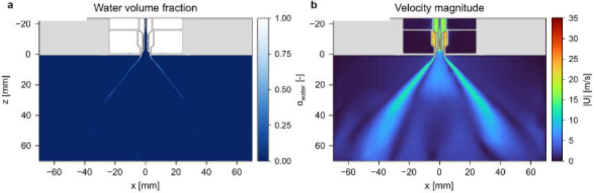
4.3.1. Injector VOF Endpoint Verification
代理模型搜索与针对特定孔数的搜索提供了具体化候选方案；最终的喷注器校验将具有代表性的已实现几何构型与流动工况直接同独立的 DeepFlame VOF 计算进行对比。响应层面的对比汇总于表 2。三个 VOF 均值均落在高斯过程回归（GPR）估计值约一个预测标准差的范围之内。压降的一致性尤为接近，而喷雾角的预测略偏高，但仍与其声明的不确定度相一致。
终点校验证实了水当量流动映射，Fuel 与 Ox 回路的相对误差分别为 2.6 × 10⁻⁷ 和 −4.1 × 10⁻⁸。十个时间帧中有三个带有质量标志；将其剔除后，平均喷雾锥角从 84.7° 降至约 83.4°，但未改变总体验证结论。帧质量筛选与七帧敏感性分析汇总于附录 C。
图 9 保留了已实现喷注器的空间证据。子图 (a) 展示中心线上的水体积分数场，子图 (b) 展示 t = 0.1 s 时刻的速度大小，其中喷注器流道位于喷出平面之上，喷雾区域位于其下。标量对比单独报告于表 2。这一喷注器尺度的 VOF 证据是燃烧室尺度的 Fluent 与 Abaqus 评估之前的第一道验证层。
代理模型与 VOF 之间的三个相对偏差均低于 5%（0.65-3.48%）。对于所声明的喷注器筛选任务而言，这一一致性是可以接受的，并表明代理模型预测足够可靠，能够支持几何构型排序与具体化决策，而独立的 VOF 计算仍然是已实现设计的终点验证。
23
| Response | GPR µ ± σ | VOF mean | VOF-GPR | Relative deviation | z |
|---|---|---|---|---|---|
| Spray angle | 87 . 621 ± 5 . 523 ◦ | 84 . 674 ◦ | - 2 . 947 ◦ | 3 . 48% | - 0 . 53 |
| Fuel ∆ p | 311 . 266 ± 44 . 963 kPa | 313 . 295 kPa | +2 . 029 kPa | 0 . 65% | +0 . 05 |
| Ox ∆ p | 253 . 004 ± 11 . 646 kPa | 246 . 505 kPa | - 6 . 498 kPa | 2 . 64% | - 0 . 56 |
| Response | GPR µ ± σ | VOF mean | VOF-GPR | Relative deviation | z |
4.3.2. Combustion-Field Assessment
在喷注器终点校验为已实现的头部确立第一份物理证据之后，验证工作推进到燃烧室尺度。图 10 展示了四单元构型的代表性反应流场。子图 (a) 以 0–3400 K 标尺显示三维静温场，而子图 (b) 则以 0–2200 m·s⁻¹ 标尺显示相应的速度幅值。两幅子图均展示了喷注器侧入口、燃烧室、收敛段和喷管，并利用 z = 20、60、100 和 140 mm 处的截面来展示轴向演化。两种布局的积分量对比见表 3。所登记的 Fluent 计算采用 3.5 节中的反应流设置。
计算所得流场显示出贯穿已实现燃烧室的连续且近似轴对称的反应流。温度场形成了居中的高温核心区，从喷注面到喉部和出口的径向与轴向过渡平滑，解中未出现占主导地位的孤立热点或突变间断。速度场呈现出与之互补的预期模式：头部端混合区速度较低，经收敛段逐渐加速，并在喉部附近和扩张喷管内达到最大值。相互协调的温度与速度分布表明混合充分、膨胀有序，这与已发表的再生冷却火箭推力室数值评估结果一致 [5, 45]。在这项初步设计研究中，这些流场形态提供了定性的流动组织证据，而表 3 中的积分量则提供了定量的筛选校核。理想气体氧化剂封闭关系与有效的 Fuel spray 边界条件作为已声明的初步模型假设予以保留；其详细定义记录于附录 C。
使用了一个独立的性能汇总工作簿，将反应流输出与已接受的设计状态进行比较。两种布局均保持 r Ox/Fuel = 1.0901、总流量 0.283 kg·s⁻¹、喉部直径 22.8 mm 以及相同的喉部面积 4.08281 × 10⁻⁴ m²，与设计台账相比，混合比偏差仅 0.01%，总流量偏差仅 0.02%。表 3 报告了各绝对响应量及其相对于相应设计参考值或 RocketCEA 参考值的偏差。两种布局的全部四个积分响应量均保持在所声明的 |δ| < 10% 初步设计判据之内；所列最大偏差为 7.91%。四单元布局始终更接近目标状态，而五单元快照则因其约 2.5% 的质量不平衡而被保留为置信度较低的证据。在所施加的
24
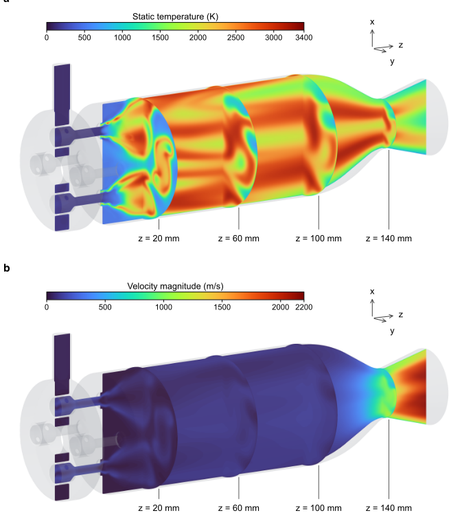
流量与喉部面积相匹配的情况下，这些对比为初步构型选择提供了一致的基础。
4.3.3. Top-Plate Thermal-Structural Assessment
Fluent 分支建立了燃烧室尺度的热与压力环境；下一个问题是所实现的头部能否承受其耦合载荷。喷注器顶板在喷注器与点火器开孔周围传递组合的压力与热载荷，使其成为结构验证的关键区域。图 11 将该载荷与四单元候选组件的响应联系起来。(a) 中的节点温度场范围为 140.18-396.38 K，与压力载荷一起为 (b) 中的结构计算提供热载荷。这些视图将耦合响应定位于开孔周围及外围壳体处。面板 (c) 提供定量的应力评估。
| Metric | Design reference | Four elements | Relative error | Five elements | Relative error |
|---|---|---|---|---|---|
| p c | 1 . 000 MPa | 0 . 9441 MPa | - 5 . 59% | 0 . 9303 MPa | - 6 . 97% |
| F | 500 N | 471 . 63 N | - 5 . 67% | 460 . 53 N | - 7 . 89% |
| I sp | 180 . 197 s | 169 . 939 s | - 5 . 69% | 165 . 940 s | - 7 . 91% |
| c ∗ | 1403 . 5 ms - 1 | 1362 . 1 ms - 1 | - 2 . 95% | 1342 . 2 ms - 1 | - 4 . 37% |
| Metric | Design reference | Four elements | Relative error | Five elements | Relative error |
沿图 11(c) 中所声明的顶板路径，von Mises 应力范围为 0.96 至 254.00 MPa，在 X = 18.175 mm 处达到峰值。相对于约 350 MPa 的时效态 CuCrZr 屈服参考值，由此得到基于路径的应力裕度为 1.38（定义为屈服参考值与路径最大应力之比），满足 1.2 的最小判据。沿所声明顶板路径以及喷注器-点火器载荷传递区域周围的应力分布在空间上保持连贯，对于初步结构评估而言在物理上是合理的。两种布局均通过了规定的顶板检查，从而允许进行后续的流动均匀性比较。
4.3.4. Flow Acceptance and Injector-Layout Selection
在两种布局均满足喷注器、几何、初步设计燃烧和顶板各道关卡后，最后一项构型级检查对二者的 Ox 出口分布进行比较。该分布图有意仅限于 Ox：CFD 模型对 Ox 供给通道进行解析求解，并通过出口积分获得每条支路的流量，而 Fuel 总流量则是通过喷雾喷射边界条件直接施加的，并非作为独立的分支网络求解得出。Fuel 与总流量平衡仍会对照其规定值进行检查，但它们无法提供类似的经解析求解的 Fuel 支路分布。图 12 对这两种布局进行了比较。(a) 中的圆圈代表四个单元，(b) 中的方块代表五个单元；每个标记均相对于其所在布局自身的均值进行度量，该均值由虚线零线标示。因此，(a) 中更窄的散布范围表明分配更加均匀。
图 12(a) 和 (b) 中以四舍五入数值显示的 Ox 出口积分总量分别为 0.14736 和 0.14664 kg/s。相对于共同的 Ox 规定入口流量 0.14756 kg/s，二者的绝对流量平衡偏差分别为 0.139% 和 0.624%，均低于 1%。二者经均值归一化的两两差异为 0.487%，同样低于 1%，但与任一入口-出口偏差均不相同。所报告的这些平衡针对的是 Ox 回路；规定的 Fuel 流量仍为 0.13538 kg/s。它们与针对五单元反应流性能快照所报告的约 2.5% 总质量不平衡是相互独立的。在确立 Ox 总流量验收之后，(a) 中更紧凑的分布给出了更低的变异系数（1.92% 对 5.08%）以及
26
模型坐标，X (mm)
![Figure 11: Coupled thermal-structural response of the selected four-element injector assembly: (a) steady nodal-temperature field obtained from the kerosene- and LOX-side film conditions; (b) von Mises stress field after transfer of the temperature field and application of the pressure loads; and (c) averaged nodal von Mises stress along the declared top-plate path. The path maximum is 254.00 MPa at X = 18 . 175 mm , corresponding to a margin of 1.38 relative to the approximately 350 MPa aged-state yield reference and satisfying the minimum criterion of 1.2. The connecting line in panel (c) is for visualization only.](assets/a777/figures/fig_11.png)
最差支路偏差（3.11% 对 6.51%）。因此最终选择了四单元方案，而五单元方案仍然可行，但其整体 CFD 性能的置信度较低。
流动比较将验证转化为选择决策。所选组件将工作点 r Ox / Fuel = 1 . 09 和 I sp = 180 . 20 s 与燃烧室、喉部和出口半径分别为 28.0、11.4 和 17.1 mm 的几何参数相结合；L c = 142 . 2 mm，L e = 21 . 8 mm。其 32 通道平衡冷却布局给出 T w , max = 725 . 3 K、T out = 379 . 8 K、0.221 MPa 的压力损失以及 1.81 的低阶安全系数。与通过验收的四单元喷注器相结合，这些输出构成了本节开头所示的几何构型。从修订后的工作点到这一经验证并被选定的构型的推进过程，实现了第 3.2 节所述的共享状态连续性。
27
![Figure 12: Oxidizer-side branch mass-flow distributions from CFD under the same prescribed Ox inlet flow. Each marker gives the percentage deviation d Ox ,i = 100( ˙ m Ox ,i / ˙ m Ox - 1) ; labels report the integrated Ox outlet flow in kg/s. (a) Four elements: total 0.14736 kg/s, CV Ox = 1 . 92% , and δ Ox , max = 3 . 11% . (b) Five elements: total 0.14664 kg/s, CV Ox = 5 . 08% , and δ Ox , max = 6 . 51% . Both layouts satisfy the flow-acceptance checks for the Ox circuit; the lower within-layout dispersion favors four elements.](assets/a777/figures/fig_12.png)
4.3.5. Workflow-Level Refinement and Configuration Reuse
上述物理检查以一个被选定的构型收尾；随后，工作流必须证明该状态可以在不静默复用已被取代证据的前提下得到修订。该工程序列还包括对热剖面/选定几何绑定关系的修正，以及其后重复进行的低阶结构分析（附录 B）。这些行动展示了工作流在物理不可行与输入绑定修正两种情形下的延续推进。因此，以下受控测试从物理层面的验证转向工作流层面的细化：依赖感知的修订处理，以及几何接口在不同喷管族之间的复用。
修订感知的工作流验证。两种配置在同一冻结设计快照下的三个受控场景上进行比较。完整配置启用自动失效判定与修订感知的准入；对照配置仅禁用这些检查，同时保留相同的基线、调用参数、快照完整性检查以及文件存在性与校验和检查。一次上游混合比变更和一次仅涉及结构的材料变更用于检验主状态更新路径；提交一份已被取代的 STL 文件则用于检验实际 Abaqus 适配器的入口检查。每个场景在两种配置下均从同一基线出发，从而得到六次在求解器启动前停止的确定性执行。
预期的受影响集合在执行前已注册，回放过程记录了遗漏与多余的失效判定、重新执行计划中的新增项，以及陈旧文件的准入结果（附录 A）。完整配置复现了两个预期的失效集合，并阻止了已被取代的 STL 文件。上游混合比变更使 11 个阶段中的 24 个工件失效，并向按依赖排序的重新执行计划中添加了 7 个阶段；而禁用修订检查的配置未检测到其中任何新受影响的记录。仅涉及结构的材料变更在完整配置中使 4 个阶段中的 5 个工件失效；当检查被禁用时，受影响的阶段已处于待执行状态，因此检测的成立依据是新失效的记录，而非计划差异。对于已被取代的 STL 文件，完整配置在 Abaqus 入口处拒绝了该非活动文件，而对照配置在预检阶段接受了它。
28
喷管构型复用。构型复用测试仅改变喷管形状分支，同时保持推力（500 N）、室压（1.0 MPa）、推进剂（LOX/RP-1）、混合比（1.05）、收缩比（6）、0.1 mm 参数量化以及共同的冷却/壁面配置固定不变。截短最优型面（TOC）、15° 锥形以及 30°/10° 抛物线钟形型面均保留了喷注器面、燃烧室末端、喉部和出口锚点，且轴向坐标严格递增。最大径向重构误差不超过 0.1 mm。全部六个固体/流体 STL 文件均通过二进制格式校验，预期的日志标记均已出现，15 项生成器回归测试全部通过。型面离散化与三角形数量保留在附录 D.2 中。
图 13 在喉部处对型面对比进行了分离。子图 (a) 采用轴向坐标 x，展示了从喷注器面到喉部几乎重合的燃烧室与收敛段型面。子图 (b) 仅展示扩张段，并将各喉部重置为 x - x t = 0。插图在推力室示意图上说明了这些坐标定义。抛物线钟形型面在最短的下游距离内到达出口，其次是锥形型面和 TOC。计入上游段后，三者的完整型面长度分别为 158.5、164.8 和 177.7 mm。空心标记标示了保留的稀疏坐标。结合共同的验证结果，这些型面证明了在所声明公差内几何接口可跨喷管族复用。
总体而言，这些受控测试展示了共享状态与几何接口如何支持所执行的工程序列：修订检查识别出依赖性工作并拒绝失效输入，而同一几何契约则容纳了不同的型面族。这些机制层面的结果与代表性设计的物理评估和选择结果形成互补。
5.1. Long-Horizon Workflow Execution
长时程执行（long-horizon execution）在这里是指 Agent 驱动一段相互依赖的工程任务扩展序列，从需求一直推进到经过评审的初步设计。所记录的计划在各阶段之间保留了未解决的工作，并使几何生成保持挂起状态，直至子系统准入问题得到解决（附录 B）。这使得流程推进成为一项工程决策：已完成的计算只有在其输出满足相关条件时，才能使后续工作得以开展。有条件的人工批准同样支持继续执行。冷却失效激活了先前已获授权的富燃侧搜索，但并未授予对室压或安全限值进行无限制修改的权限。
29
![Figure 13: Contour comparison after strict 0.1-mm simplification. (a) Chamber and convergent profiles from the injector face to the throat, plotted against x . (b) Divergent profiles from the throat to the exit, plotted against x - x t . Insets illustrate the coordinate definitions and are not to scale. Open markers denote retained profile points; maximum interpolation errors against the quantized source profiles are 0.1000 mm for TOC, 0.09828 mm for the 15 ◦ conical contour, and 0.1000 mm for the 30 ◦ / 10 ◦ parabolic bell.](assets/a777/figures/fig_13.png)
不同的失效需要不同的继续执行方式。冷却不可行促使进行物理上的重新设计，而热剖面/所选几何不匹配则要求修正输入绑定并重新进行结构分析。第 4.3.5 节中的受控修订测试解决了第三个问题：防止下游使用已被设计变更所取代的证据。这些测试独立于历史执行记录，为失效判定与求解器进入机制提供支持。在上述各类继续执行方式中，由单一协调者保留全局计划与决策权，确定性程序负责评估候选方案并强制执行数值门槛，而工程师则授权重大变更并评审结果。
5.2. Comparative Engineering Value
一旦问题表述与执行顺序已知，固定脚本和多学科优化即可支持可复现的计算 [8]。RocketAgent 在这些计算之间加入了一个受策略约束、非人工的自修复循环：持有计划的 Agent 观察到失败或不一致的结果，选择一种已获授权的继续执行方式，更新共享的 Design IR，使依赖的产物失效，并恢复受影响阶段的执行，而无需工程师手动修改每一个下游输入。在代表性工作流中，不可行的最大 I_sp 冷却点触发了预先授权的富燃侧搜索，该搜索将工作点改为 r_Ox/Fuel = 1.09，并将新的流动状态传播到性能、冷却、喷注器和几何任务中；由此得到的搜索重新获得了严格可行的冷却候选方案。另一处热剖面/所选几何不匹配则通过输入重绑定和重复的结构计算得到修正。受控修订测试提供了一个互补的机制层面示例：上游变更自动使依赖记录失效，已被取代的 STL 在求解器入口处被拒绝，而在对比配置中这些记录仍被视为可采纳。这些示例表明，自修复是一种受治理的继续执行，而非不受限制的自主性：人工审批界定允许的变更范围并评审结果，而 Agent 则执行中间的诊断、传播与恢复动作。当长工程任务链跨越异构工具时，这使 RocketAgent 在交接清晰度、状态连续性、溯源以及从反馈到重新设计的可追溯性方面具有优势。
5.3. Framework Evolvability
RocketAgent 支持在配置、计算能力和知识层面进行扩展。不同的喷注器数量和喷管型面展示了在特定于配置的输出下对通用接口的复用。材料、推进剂、工况和冷却架构同样可以通过后端定义、适用性条件和工程门控来表示。扩展这些定义需要与新配置相适应的证据，而不是将既有设计的验收结论直接移植过来。第 3.2 节中的能力-技能-适配器（capability-skill-adapter）分离通过声明输入、输出、单位、验证器和依赖效应，将这种复用扩展到替换求解器或更高保真度的分析。知识则通过第 3.5 节中的评审过程不断演化：已完成的修订和反馈提供了与溯源相关联的经验，从中可以复用经过评审且适用的指导。这保留了记录某一结果与将其接受为通用工程规则之间的区别。这些扩展路径共同为更广泛的产品覆盖提供了基础，而无需每个计算后端共享同一实现。
5.4. Limitations and Future Work
代表性工作流和模块测试支持基于仿真的初步设计。它们并未确定点火/关机行为、燃烧稳定性、循环寿命、供应系统动力学或制造鉴定。材料表征、冷流测试和热试车证据对于部件鉴定仍然是必要的。未来工作将连接实验证据、扩展配置与分析覆盖范围，并检验经过评审的经验能否在重复工作流中改进后续设计工作。
31
6. Conclusions
RocketAgent 使 Coding Agent 能够驱动一个扩展的多学科工作流，用于推力室初步设计。据作者所知，这是首个知识约束的单协调者、多技能架构，明确面向液体火箭推力室这类复杂工业产品的初步设计。该 Agent 维护总体计划，并协调从需求一直到子系统设计、几何实现与多物理场评估的各技能。知识图谱（KG）与设计中间表示（Design IR）支持跨阶段执行，而修订感知的作废机制与求解器入口准入则在设计变更时管理依赖工作。
代表性设计展示了闭环细化与构型选择。改用 r Ox/Fuel = 1.09 后，冷却搜索从 0/74 个硬可行候选变为 8/70 个。喷注器筛选将物理流量分配与以水为参考的代理模型预测联系起来，并利用 118 个留出评估和 140 个选择后独立 VOF 评估进行检验。四单元与五单元构型均通过了所报告的工程关卡和 Ox 总流量判据。二者的 Ox 流量变异系数分别为 1.92% 和 5.08%，支持选择四单元，同时保留五单元作为可行方案。
两个构型与三个受控场景检验了主工作流中的修订处理。完整构型复现了预期的上游与局部作废集合，并在求解器入口拒绝了已被取代的 STL。禁用修订检查后，这些响应随之消失。
对工程信息学的贡献在于：由 Agent 驱动的执行贯穿长工程任务链，并有可审计的状态管理以及可扩展的配置、能力与知识作为支撑。基于仿真的结果为后续的实验鉴定奠定了基础。
Appendix A. Evaluation Scope and Reproducibility
预测不确定性。图 A.14 针对选择后的 140 次评估，比较了经验中心区间覆盖率与高斯名义覆盖率 2Φ( k ) - 1 。相对于等值对角线，喷雾角曲线在大多数水平上低于名义覆盖率，而 Fuel-pressure 曲线则高于名义覆盖率；Ox-pressure 曲线则更贴近对角线。因此，这三条曲线区分了被低估的喷雾角不确定性与保守的 Fuel-pressure 区间，是对表 1 中两个覆盖率水平的扩展。该表中的高斯负对数预测密度为 NLPD j = (2 n ) - 1 ∑ i [log(2 πσ 2 ij ) + z 2 ij ] 。未在这些标签上拟合任何重新校准，所得覆盖率适用于所评估的基准测试（benchmark），而非针对特定构型的推断。
知识图谱（KG）检索设置。级与内部设计记录标识符设定检索上下文。先验设计评分对推力、室压、Ox 与 Fuel 各赋予权重 0.20，对喷管构型与冷却需求各赋予权重 0.10。推力与压力使用 N 和 MPa。正数值字段使用 s num ( a, b ) = max { 0 , 1 -| ln( a/b ) | / ln(10) } 。类别字段在去除连字符与下划线后采用小写精确匹配或子串匹配。缺失或非正的数值以及缺失的类别贡献为零，且不进行权重重新归一化；并列时保持索引顺序。
默认检索返回至多三个得分为正的先验设计、四个排名为正的 RPA 示例以及六张与级兼容的方法卡。RPA 排序使用所需分析特征、ChannelWallSegment/热能力、推进剂兼容性、压力接近度、喷管特征以及示例类别。
33
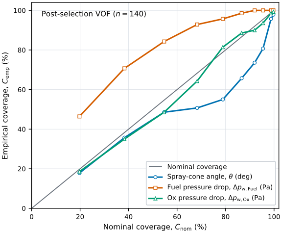
已审查事实按级与主题别名进行过滤：所有匹配项均保留在关联响应中，紧凑轨迹中至多显示五条。子图扩展从六个关系族中各保留至多 20 条边：设计记录、级、方法、需求-功能、冲突与经验。120 条的分配上限允许边在不同族之间重复。规则卡 JSON 指针指定用于适用性检查的范围、单位、取值范围、状态与工件谓词。
代码与工件可用性。冻结的证据包包含 Design-IR 与工作流模式（schema）、求解器输入与配置文件、脚本、几何与网格工件、原生及处理后的输出、验证报告、决策记录、清单（manifest）与校验和，用以支持所报告的结果。支持本研究结论的代码与数据可在合理请求下向通讯作者获取。
修订治理重放记录。重放包保留了冻结的基线、两个仅在修订检查开关上不同的配置文件、预先注册的预期集合、六条执行轨迹以及逐集合的比较。预期集合在单独的协议文件中规定，在执行前进行哈希，并且仅在所有轨迹关闭之后才加载用于比较。它们是协议层面预先注册的，且不声称经过独立的人工签核。上游扰动将所选混合比从 1.09 改为 1.095。结构扰动将一个孤立的分析卡从 120 GPa 改为 125 GPa；这些工作流测试值不会替代物理分析中所使用的共享 128 GPa CuCrZr 定义。
34
被取代文件检查在基准测试本地的台账（ledger）副本中使用一个五单元几何分支，而不改变所选的四单元设计。实际的 Abaqus 适配器在完整构型下返回退出码 3，在对比构型下返回 0，且两次调用均未创建求解器输入文件（solver deck），也未启动求解。基线中已经存在待处理的 Abaqus、最终决策、验证与知识同步阶段，因为所需的输出缺失。这一共同的积压任务解释了为什么尽管作废记录不同，局部变更计划却完全相同。这六次执行是确定性的治理重放，而非独立的 LLM 试验，并且未报告所避免的求解器成本。
Appendix B. Agent Configuration and Execution Records
运行时与会话上下文.. 代表性设计是在本地 Windows 工作区上的 Codex Desktop 中开发的。所保留的任务日志记录了客户端标识符 0.147.0-alpha.6.6、OpenAI 模型 gpt-5.6-sol，以及各轮次中的低 reasoning-effort 设置。工作在同一持久任务中跨多个日期持续进行，其中包括上下文压缩事件。因此，各工程阶段并非独立的 LLM 试验。日志既未记录 temperature，也未记录不可变的后端模型发布版本，且这些设置并非从应用程序默认值推断得出。
指令与决策归属.. 由作者控制的指令包括工程请求、项目运行规则、分阶段工作流以及任务专属技能文档。Agent 在调用其脚本之前加载相关技能，并维护一个包含待处理、进行中和已完成状态的有序任务计划。它选择符合条件的动作，绑定 Design IR 输入，解释返回的证据，并在已批准的范围内提出修订。确定性程序实现数值搜索、目标评估、工程阈值和修订传播。由一个主导 Agent 拥有全局计划，并记录了用于初始检索和就绪检查的有界辅助 agents。代码与配置编辑功能可用，且所请求的适配器更改会连同其检查一并记录在日志中。对需求、已接受模型和安全限值的更改由人工授权管辖。因此，单一协调者的描述指的是计划与决策的归属。
观察到的规划与执行.. 初始请求指定了 500 N 的 LOX/RP-1 设计。在计算之前，Agent 提出了工况并获得用户确认，其中包括一项有条件许可：若热筛选失败，则在固定燃烧室压力下进行富燃侧搜索。所记录的七步计划涵盖概念验收、性能、几何、喷注器筛选、冷却与低阶结构、STL 生成，以及最终检查与报告。计划更新记录了进展情况，并在子系统准入尚未解决时将几何生成保持为待处理状态。性能调用使用了已确认的 500 N 推力与 1.0 MPa 燃烧室压力，并将海平面环境压力转换为后端单位。
在最大比冲冷却搜索未返回任何硬可行候选之后，Agent 调用了经授权的富燃侧（rich-side）搜索并细化了可行域。在 r Ox / Fuel = 1.09 处的确认运行使用了由 RocketCEA 推导得到的物理 Fuel 流量 0.135380 kg/s，并保留了八个硬可行候选。Agent 对这些调用进行了排序，而确定性脚本负责计算响应并强制执行阈值。日志还记录了对热剖面/所选几何绑定关系的修正，以及随后重复进行的一次低阶结构计算。用户确认、技能加载调用、计划更新、工具调用以及文件变更记录提供了可观察的执行证据。这些历史性操作不同于第 4.3.5 节中随后开展的受控修订治理评估。
Appendix C. Numerical Simulation Settings
喷注器冷态流动 VOF（流体体积法）.. snappyHexMesh 网格采用 0.5 mm 的全局网格尺寸，并在旋流室及下游雾化区域进行 0.125 mm 的局部加密，每种构型约得到 5.5 × 10⁶ 个网格单元。边界条件由入口质量流量、出口压力和无滑移壁面定义。DeepFlame 基于 OpenFOAM 的 interFoam 工作流采用 SST k-ω、PIMPLE 耦合以及固定的 10⁻⁵ s 时间步长。两条回路均以式 5 所映射的流量通入水。提取的物理量包括喷雾角、回路压降、相/速度场以及水流量守恒检查。第 4.3 节中的独立端点比较保留了全部十个时间帧及其质量标志，并单独报告了七帧质量筛选后的敏感性结果。有三个帧被标记为 MULTIPLE_INTERSECTIONS；其余七个帧给出的平均喷雾角约为 83.4°，而完整十帧窗口内为 84.7°，同时流量映射误差的幅值始终低于 5 × 10⁻⁷。
燃烧室反应流动.. Fluent 网格由 snappyHexMesh 生成，背景分辨率为 0.5 mm，燃烧室头部加密至 0.25 mm，总计约 7.9 × 10⁶ 个网格单元。稳态雷诺平均 Navier-Stokes（RANS）计算采用 SST k-ω 以及带可压缩性修正的部分预混火焰面生成流形（FGM）模型。煤油以正癸烷（n-decane）代替，并采用十步简化的 Choi 机理。空心锥燃料喷射采用 10 m s⁻¹ 的喷射速度、400 K 的初始液滴温度、30° 的半锥角以及 Rosin-Rammler 尺寸分布。400 K 这一取值是燃烧室模型的初始化条件，并非计算得到的冷却出口温度。压力-速度耦合采用 Coupled 算法；最终的空间离散格式为二阶迎风。Ox 供给通道被网格直接解析，其出口通量按支路逐一积分；而 Fuel 总流量与喷雾分布则通过喷射边界条件给定；因此，正文中只有 Ox 具有解析得到的支路均匀性结果。
喷注器角度的约定有所不同。以水为参考的高斯过程回归（GPR）/DeepFlame 分析所报告的约 80° 量，是由两个拟合液膜半角得到的完整喷雾锥角；而 Fluent 模型则规定了 30° 的 Fuel 空心锥半角。后者是在理想气体 Ox 封闭下为保持具有代表性的 Fuel-Ox 重叠而选取的有效数值边界条件；它既不是对 GPR/VOF 角度的换算，也不是对其的定量预测。喷雾几何还取决于动量通量比、室压和热力学状态，因此以水为参考的角度不会被直接移植到反应性 LOX/RP-1 计算中 [46]。
36
顶板耦合分析。所选的 Abaqus 装配体包括顶板、四个周边喷注器通道、中央点火器通道、壳体过渡段以及侧端口。其热/结构共用的二次四面体网格包含 266,393 个节点和 161,274 个单元。稳态热分析阶段采用 DC3D10 单元，在实际被 Fuel 和 Ox 润湿的表面上施加膜换热条件，主流温度分别为 400 K 和 90 K；两处换热系数均为 5000 Wm - 2 K - 1。热求解在六个增量步内完成。最终节点温度被传递到与之匹配的 C3D10 结构网格；在两个润湿表面组上均施加了 1.2 MPa 的压力。在结构计算中，全局 U 3 在下方的 Set-1 界面上受到约束，上方的 Set-2 界面保持不受约束，并引入两个最小的面内约束以抑制刚体运动。采用几何线性的 Abaqus/Standard 分析步，借助附录 A 中的通用各向同性 CuCrZr 材料卡将压力与热应变组合在一起。该分析针对所选的四部件装配体；备选布局未纳入结构计算。
积分点应力被外推至单元节点，并在相邻单元之间进行算术平均，云图显示采用 75% 的节点平均阈值。用于定量评估的顶板路径在 Z = - 0 . 2 mm 处、Y = 0 ± 0 . 05 mm 范围内、沿 - 29 . 5 ≤ X ≤ 29 . 5 mm 区间保留了 68 个物理节点。所报告的最大值与裕度均基于这些节点值；连接线仅作视觉引导。温度、热流密度、温度梯度、应力、位移以及反力输出均按适用情况予以保留。
证据核查。每项分析均保留其几何与运行状态绑定关系、原生输出、提取的量值以及处置结论。适用的数值核查涵盖残差、守恒性、离散化与迭代稳定性、网格质量以及物理一致性。仅完成准备、不完整、发散以及失败的运行不会获得 accepted 状态。
Appendix D.1. Shared Records and Execution Interfaces
图 D.15 对第 3.2 节中引入的共享状态进行了扩展。在上排中，需求约束参数，参数进而为工件提供输入。下方的返回路径将工件连接到其证据，再连接到决策；虚线箭头授权参数修订，从而闭合所记录的设计回路。假设则单独限定参数的使用。这种安排同时保留了工程
37
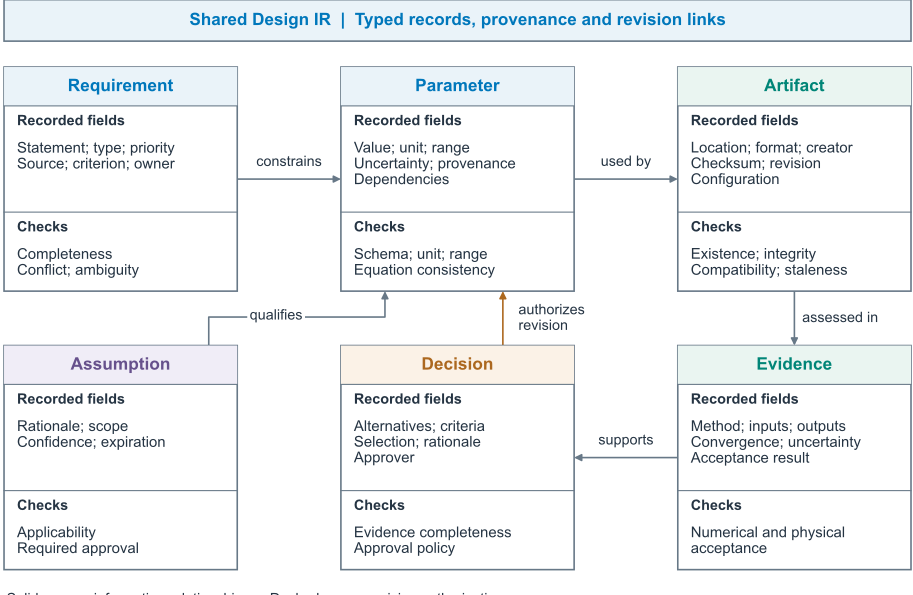
依赖关系及其变更原因，使修订机制能够追踪受影响的输出，而不会丢弃无关的记录。
图 D.16 展示了单个任务如何更新这些记录。前向路径将 Agent 能力选择连接到技能、其适配器以及工程后端。返回的工件随后进入验证以及任何所需的审批，之后才提交至 Design IR。蓝色虚线返回路径使该 accepted 状态可供后续规划与技能调用使用。将工件生产与状态提交分离，可确保下一个任务读取到经过检查的结果；若验证失败，则改为保留先前状态，并为继续执行提供反馈。
Appendix D.2. Embodiment-Design Settings
性能与型面.. 所评估的 RocketCEA 计算采用 estimate_Ambient_Isp，并使用平衡膨胀（frozen=0 且 frozenAtThroat=0）、g 0 = 9 . 80665 ms - 2 ，以及在未规定膨胀比时的海平面出口压力匹配。包含端点的网格与有界黄金分割细化在 r Ox / Fuel = 0 . 4 - 4 . 0 范围内保留了端点。可选的先前设计性能界限要求喷管模式、推进剂、室压以及推力范围或发动机级别相容。若无此类证据，计算得到的最优值保持为设计值。压力从 MPa 接口约定转换为后端约定。
38
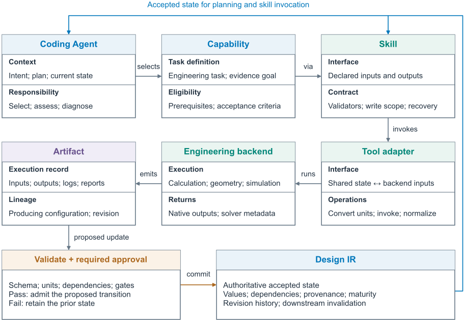
RPA 的几何输出包括 R c 、L cyl 、L c 、β 、R 2 、R 1 、R t 、R n 、θ n 、θ e 、R e 、L e 、出口面积比、质量流量以及型面坐标。其中，β 为收缩角，θ n 、θ e 为喷管初始角与出口角。从 RPA 中提取了锥形与 TOC 型面。抛物线钟形重构结合了 RPA 定尺寸、喉部圆化以及切线匹配的二次 Bézier 曲线。所评估的构型采用 A c /A t = 6 、15 ◦ 锥形以及 30 ◦ / 10 ◦ 钟形。尺寸被量化至 0 . 1 mm，并复查了正值性、R c > R t 、R e > R t 、0 < L cyl < L c 、轴向坐标单调性，以及喷注面、燃烧室、喉部与出口锚点的一致性。
39
冷却搜索.. 标称遗传算法（GA）使用种群规模 20、五代、四个精英个体、锦标赛规模 3、交叉概率 0.85、变异概率 0.25、变异尺度 0.12 以及两个随机移民个体。有界空间包含 16-34 条通道、入口/出口深度 2-5/1-3.5 mm、宽度 1-1.8 mm、热壁厚度 1.2-2.0 mm 以及通道角度 0 - 30 ◦ ，冷却剂流量因子为 1。尺寸被量化至 0 . 1 mm ，宽度或深度低于 1 . 0 mm 的通道被拒绝。预筛选器还检查了肋宽、长宽比以及宽度与节距的相容性。
RPA NozzleCooling 使用 addChannelWallSegment，采用 75 个站位、Ievlev 关联式、辐射发射率 0.8，且无膜冷却。仅辐射的回退方案被拒绝。网格、拉丁超立方以及面向可行性的候选生成器同样可用；将结果归因于 GA 需要有相应记录的搜索模式与进化设置。运行记录对无效/求解前候选、已完成的评估、硬可行候选、Pareto 可接受候选以及非支配前沿进行了区分。保守的鲁棒性准则与硬准入分开评估。所选工件保留了喷管出口冷却剂入口方案以及逐站位的结构筛选输出。
喷注器域（Injector domain）.. 十个几何或派生的高斯过程回归（GPR）特征分别为 R_Ox,out = 1.5-1.7 mm、R_Fuel,out = 2.8-3.1 mm、L_Fuel,out = 4.4 mm、L_Fuel,out/(2R_Fuel,out) = 0.7097-0.7857、L_Ox,inner,out = 10.5-13.5 mm、旋流角 80-89.9°、旋流俯仰角 0-20°、出口扩张角 30-42°、R_Ox,swirl = 0.7-1.1 mm 以及 R_Fuel,swirl = 0.5-0.9 mm。固定的原始推进剂流量特征涵盖液氧（LOX）的 0.025-0.040 kg/s 与 RP-1 的 0.025-0.050 kg/s。适用性在按数量进行流量分配之后进行检查。训练数据中的水替换分别使用 LOX、RP-1 和水的参考密度 1145、791.3 和 1000 kg/m³。固定的几何上下文为 w_inj = 0.75 mm、R_Ox,in = 4.0 mm 和 R_Fuel,in = 5.0 mm。在进行全新预测和联合筛选之前，搜索输出被量化至 0.1 mm 和 0.1°。
几何与工件交接（Geometry and artifact handoff）.. PicoGK 使用毫米单位，以事务方式应用配置更改，并在执行后恢复外部配置。已完成的运行保留了非空的装配实体与组合流体 STL、所应用的几何映射以及生成日志。二进制有效性、拓扑、局部尺寸、连通性和网格划分适用性需要单独的验证器记录。在喷管配置测试中，TOC、15° 锥形和 30°/10° 抛物线钟形型面分别保留了 18、14 和 18 个稀疏点，最小轴向间距分别为 0.9、1.1 和 1.1 mm。其实体/流体三角形数量分别为：TOC 为 1,589,804/395,028，锥形为 1,539,824/383,764，钟形为 1,508,448/377,168。